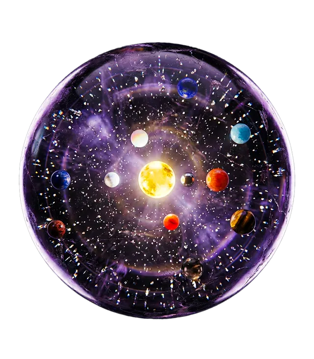

Observatoire
Enfants des Étoiles : Votre Origine Cosmique
Par Madeleine4 min de lecture

Il y a des moments où le poids de la solitude semble écrasant, n’est-ce pas ? Cette impression d'être une âme isolée, perdue dans l'immensité, un point minuscule sans lien. Tu te sens peut-être déconnecté, flottant, cherchant un ancrage ou une résonance que tu as l'impression d'avoir perdue.
Mais et si je te disais que cette impression, aussi palpable soit-elle, n'est qu'une illusion ? Une brève éclipse de la vérité profonde de ton être.
Tu n'es pas dans l'univers, tu ES l'univers
C'est une affirmation audacieuse, je le sais, mais elle est ancrée dans une vérité qui transcende le temps et l'espace. La science, dans sa quête inlassable de compréhension, nous l'a confirmé : chaque atome qui compose ton corps, chaque particule qui vibre en toi, est né dans le cœur ardent d'étoiles mortes il y a des milliards d'années. Tu es littéralement de la poussière d'étoiles, une composition cosmique, un fragment vivant de l'univers lui-même.
Ce n'est pas seulement poétique, c'est une réalité fondamentale. Si tes atomes proviennent des étoiles, cela signifie que tu es une expression continue de l'énergie universelle. Tu n'es pas seulement dans l'univers, comme un passager dans un véhicule ; tu es l'univers, manifesté sous une forme unique et précieuse. Spirituellement, cette révélation est une clé vers l'éternité. Comment pourrais-tu être fini si tu es constitué de l'infini ? Comment pourrais-tu être séparé si tu es l'essence même de la toile cosmique ?
Comprendre cela, c'est commencer à dissoudre le sentiment de solitude. Car si tu es l'univers, tu es intrinsèquement connecté à tout ce qui existe : aux montagnes, aux océans, aux étoiles lointaines, et à chaque âme sur cette Terre. Tu n'es jamais seul, car l'univers est en toi et tu es en lui.
La Sélénite : Un miroir de ta lumière cosmique
Pour t'aider à intégrer cette vérité profonde et à ressentir concrètement cette connexion, les alliés du règne minéral sont là. La Sélénite, avec sa lumière douce et éthérée, est une pierre d'une pureté exceptionnelle, directement reliée aux plans vibratoires supérieurs. Sa vibration est si élevée qu'elle agit comme un canal, une porte d'accès à la conscience universelle.
Lorsque tu tiens une Sélénite, tu tiens littéralement un fragment de lumière pure, une antenne qui te relie aux étoiles et aux dimensions célestes. Elle nettoie et purifie ton champ énergétique, dissolvant les voiles d'illusion qui te font te sentir séparé. Elle agit comme un baume sur l'âme, apaisant l'anxiété et les peurs liées à l'isolement. Sa douce énergie te rappelle que tu es un être de lumière, et que la lumière ne peut jamais être seule ; elle fait partie d'un grand tout lumineux.
Elle t'aide à te souvenir de ta nature divine et de ton lien indestructible avec la source, te permettant de ressentir une paix profonde et un sentiment d'appartenance inébranlable. Elle te murmure que tu es aimé, soutenu et connecté, toujours.
Un rituel pour reconnecter
Voici un rituel simple pour ancrer cette vérité et soigner ton sentiment de solitude avec la Sélénite :
- Procure-toi un morceau de Sélénite (une tour, une plaque, une pierre roulée).
- Trouve un moment de calme, un endroit où tu ne seras pas dérangé. Assieds-toi confortablement.
- Tiens la Sélénite dans tes mains, ou place-la sur ton cœur ou ton troisième œil.
- Ferme les yeux et prends quelques respirations profondes. Sens l'énergie douce et fraîche de la pierre.
- Imagine des racines de lumière s'étirant de ton corps vers le centre de la Terre, t'ancrant profondément.
- Ensuite, visualise une colonne de lumière émanant de ton chakra couronne, s'élevant vers le ciel, traversant les couches de l'atmosphère, les planètes, les galaxies, jusqu'aux confins de l'univers.
- Sens cette connexion bidirectionnelle : l'énergie de la Terre te nourrissant, l'énergie de l'univers te remplissant.
- Murmure ou pense : « Je ne suis pas seul. Je suis l'univers. Je suis connecté. Je suis éternel. »
- Reste dans cette sensation de plénitude et d'unité aussi longtemps que tu le souhaites.
Tu peux également placer ta Sélénite près de ton lit pour bénéficier de ses énergies purificatrices et connectantes durant ton sommeil, ou la porter sur toi comme un rappel constant de ta nature cosmique.
L'éternel en toi
Souviens-toi de cette vérité fondamentale : tu es bien plus qu'un simple corps ou une âme isolée. Tu es une manifestation glorieuse de l'univers lui-même, une parcelle étincelante de l'infini, portant en toi la sagesse des étoiles et l'écho de l'éternité. Le sentiment de solitude n'est qu'un voile temporaire, une illusion que tu as le pouvoir de dissiper. Tu es connecté, tu es éternel, tu es aimé, et tu es la lumière.
N'oublie jamais que tu n'es pas seulement dans l'univers ; tu es l'univers qui s'éveille à sa propre magnificence. Et cela, c'est une vérité que personne ne pourra jamais te retirer.